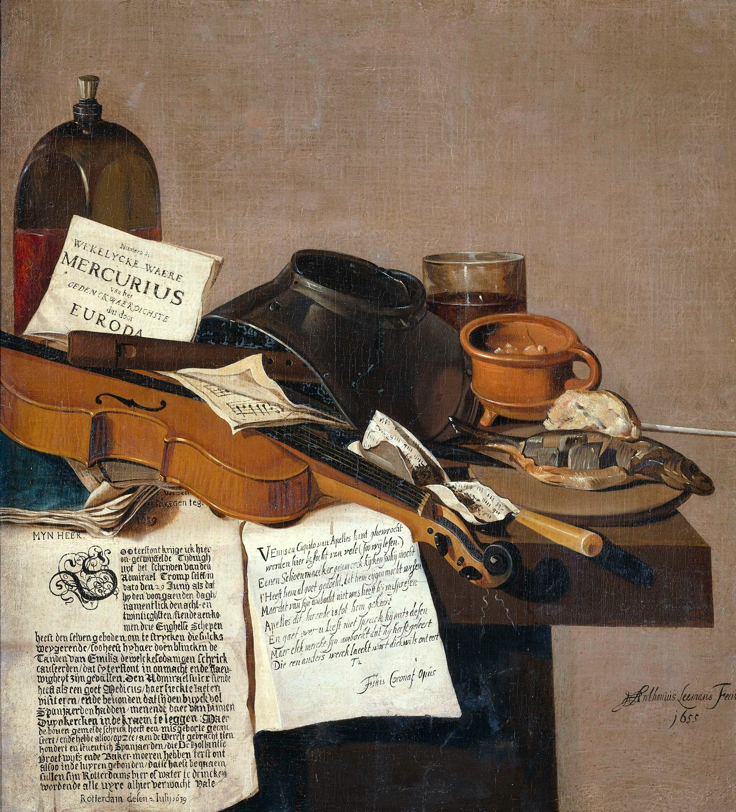

Historia del Arte
La historia del arte es el relato de la evolución del arte a través del tiempo, entendido como cualquier actividad o producto realizado por el ser humano con finalidad estética o comunicativa, a través de la cual se expresan ideas, emociones o, en general, una visión del mundo, empleando diversos recursos, como los plásticos, lingüÃsticos, sonoros o mixtos. La historiografÁa del arte, como disciplina académica y entorno institucional (museos, mercado del arte, departamentos universitarios, producciones editoriales) se suele restringir a las denominadas artes visuales o plásticas (esencialmente a pintura, escultura y arquitectura), mientras que otras artes son más especÁficamente objeto de estudio de otras disciplinas claramente delimitadas, como la historia de la literatura o la historia de la música, siendo todas ellas objeto de atención por la denominada historia de la cultura o historia cultural, junto con las historias sectoriales enfocadas a otras manifestaciones del pensamiento, como la historia de la ciencia, la historia de la filosofÁa o la historia de las religiones. Algunos campos de conocimiento estrechamente relacionados con la historia del arte son la estética y la teorÁa del arte.
A lo largo del tiempo el arte se ha clasificado de muy diversa manera, desde la distinción medieval entre artes liberales y artes vulgares (o «mecánicas»), pasando por la moderna distinción entre bellas artes y artes menores o aplicadas, hasta la multiplicidad contemporánea, que entiende como arte casi cualquier manifestación de la creatividad del ser humano. La sucesiva ampliación del listado de las «artes principales» llegó en el siglo xx hasta el número de nueve: la arquitectura, la danza, la escultura, la música, la pintura, la poesÁa —entendida de forma amplia como literatura con intención estética, que incluye los distintos géneros del teatro y la narrativa—, la cinematografÁa, la fotografÁa y la historieta (o cómic). Al solapamiento conceptual de términos entre artes plásticas y artes visuales se añadieron los de diseño y artes gráficas. Además de antiquÁsimas formas de expresión artÁstica como la moda y la gastronomÁa, actualmente se suelen considerar artes nuevos vehÁculos expresivos como la publicidad, la animación, la televisión y los videojuegos.
La historiografÁa del arte es una ciencia multidisciplinar, procurando un examen objetivo del arte a través de la historia, clasificando culturas, estableciendo periodizaciones y observando sus caracterÁsticas distintivas e influencias. El estudio de la Historia del Arte se desarrolló inicialmente en el Renacimiento, con su objeto limitado a la producción artÁstica de la civilización occidental. No obstante, con el tiempo se ha impuesto una visión más amplia de la historia artÁstica, intentando una descripción global del arte de todas las civilizaciones y el análisis de sus producciones artÁsticas en términos de sus propios valores culturales (relativismo cultural), y no solo de los de la historia del arte occidental.

El arte goza hoy en dÁa de una amplia red de estudio, difusión y conservación de todo el legado artÁstico producido por la humanidad a lo largo de su historia. Durante el siglo xx han proliferado las instituciones, fundaciones, museos y galerÁas, de ámbito público y privado, dedicados al análisis y catalogación de las obras de arte, asà como su exposición a un público mayoritario. El auge de los medios de comunicación ha sido fundamental para el mejor estudio y divulgación del arte.
Eventos y exposiciones internacionales, como las bienales de Venecia y São Paulo o la Documenta de Kassel han ayudado al fomento de nuevos estilos y tendencias. Premios como el Turner de la Tate Gallery, el Premio de la Fundación Wolf de las Artes, la Medalla Picasso de la Unesco, el Premio Velázquez de Artes Plásticas, el Premio Pritzker de arquitectura, el Premio Nobel de literatura, la Medalla Mozart de la Unesco de música clásica, el Pulitzer de fotografÁa y los Óscar de cine también fomentan la obra de los mejores creadores a nivel internacional. Instituciones como la Unesco con el establecimiento de un Patrimonio de la Humanidad ayudan igualmente a la conservación de los principales monumentos del planeta.
Arte en la Edad Moderna (1400-1800)
Renacimiento: época de gran esplendor cultural en Europa, la religión dejó paso a una concepción más cientÁfica del hombre y el universo, surgiendo el humanismo. Los nuevos descubrimientos geográficos hicieron que la civilización europea se expandiese por todos los continentes, y la invención de la imprenta supuso una mayor universalización de la cultura. El arte se inspira en el arte clásico grecorromano, por lo que se habla de “renacimiento†artÁstico tras el oscurantismo medieval. Inspirado en la naturaleza, surgen nuevos modelos de representación, como el uso de la perspectiva. La arquitectura recuperó los modelos clásicos, reelaborados con un concepto más naturalista y con bases cientÁficas: destacan Filippo Brunelleschi, Leon Battista Alberti y Bramante. La escultura buscó igualmente la idealizada perfección del clasicismo, como en la obra de Lorenzo Ghiberti y Donatello. La pintura sufrió una notable evolución desde las formas medievales, con formas naturalistas y temáticas profanas o mitológicas junto a las religiosas, destacando Botticelli, Perugino, Piero della Francesca, Andrea Mantegna, Leonardo Da Vinci, Rafael, Alberto Durero, Pieter Brueghel, etc.
Manierismo: evolución de las formas renacentistas, el manierismo abandonó la naturaleza como fuente de inspiración para buscar un tono más emotivo y expresivo, cobrando importancia la interpretación subjetiva que el artista hace de la obra de arte. La arquitectura adquiere un signo más efectista y de tenso equilibrio, destacando Andrea Palladio y Miguel Ángel. En escultura, descuella la obra de Miguel Ángel, con obras de tenso dinamismo donde resalta la expresión de la persona representada. La pintura tiene un sello más caprichoso, extravagante, con gusto por la forma sinuosa y estilizada, destacando en primer lugar –como en las otras artes– Miguel Ángel, seguido de Bronzino, Correggio, Parmigianino, Giorgione, Tiziano, Veronese, Tintoretto, El Greco, etc.
Barroco: época de grandes disputas en el terreno polÁtico y religioso, surge una división entre los paÁses católicos contrarreformistas, donde se afianza el estado absolutista, y los paÁses protestantes, de signo más parlamentario. El arte se vuelve más refinado y ornamentado, con pervivencia de un cierto racionalismo clasicista pero con formas más dinámicas y efectistas, con gusto por lo sorprendente y anecdótico, por las ilusiones ópticas y los golpes de efecto. La arquitectura, bajo unas lÁneas clásicas, asume unas formas más dinámicas, con una exuberante decoración, destacando Gian Lorenzo Bernini, Francesco Borromini, Fischer von Erlach, José Benito Churriguera, etc. La escultura adquiere el mismo carácter dinámico, sinuoso, expresivo, ornamental, destacando nuevamente Bernini, asà como Pedro de Mena, Francisco Salzillo, etc. La pintura se desarrolló en dos tendencias contrapuestas: el naturalismo, basado en la estricta realidad natural, con gusto por el claroscuro –el llamado “tenebrismo”–, donde cabe citar a Caravaggio y Georges de La Tour; y el clasicismo, que es igualmente realista pero con un concepto de la realidad más intelectual e idealizado, englobando a Annibale Carracci, Nicolas Poussin, Claude Lorrain, etc. Aparte de estas dos corrientes, hubo infinitud de escuelas, estilos y autores de muy diverso signo, destacando dos escuelas regionales: la flamenca (Rubens, Van Dyck), y la neerlandesa (Rembrandt, Johannes Vermeer). En España destacó la figura excepcional de Velázquez, asà como José de Ribera, Francisco de Zurbarán y Bartolomé Esteban Murillo.
Rococó: desarrollado en el siglo XVIII, supone la pervivencia de las principales manifestaciones artÁsticas del barroco, con un sentido más enfatizado de la decoración y el gusto ornamental, que son llevados a un paroxismo de riqueza, sofisticación y elegancia. La arquitectura rococó se desarrolló sobre todo en Francia y Alemania, representado por Ange-Jacques Gabriel y Johann Balthasar Neumann. La escultura tiene un aire grácil, refinado, como en la obra de Jean-Antoine Houdon o los hermanos Asam (Cosmas Damian y Egid Quirin). La pintura se mueve entre la exaltación religiosa o el paisajismo vedutista en Italia, y las escenas cortesanas de Watteau y Fragonard en Francia, pasando por el retratismo inglés de Reynolds y Gainsborough. Figura aparte es el inclasificable pintor español Francisco de Goya, que evolucionó desde un sello más o menos rococó hasta un cierto prerromanticismo, pero con una obra personal y expresiva de fuerte tono intimista. Neoclasicismo: el auge de la burguesÁa tras la Revolución francesa favoreció el resurgimiento de las formas clásicas, más puras y austeras, en contraposición a los excesos ornamentales del barroco y rococó, identificados con la aristocracia. La arquitectura neoclásica es más racional, de signo funcional y un cierto aire utópico, como vemos en los postulados de Claude-Nicolas Ledoux y Étienne-Louis Boullée. La escultura, de lógico referente grecorromano, tuvo como principales figuras a Antonio Canova y Bertel Thorvaldsen. La pintura mantuvo un sello austero y equilibrado, influido por la escultura grecorromana o figuras como Rafael y Poussin, destacando Jacques-Louis David, J.A.D. Ingres, José de Madrazo, etc.